6 The circos.heatmap() function#
Circular heatmaps are visually striking and compact. In the previous chapter, we built circular
heatmaps from low-level circos.rect() and
circos.dendrogram() calls. circlize-py
provides a high-level circos.heatmap() function that
handles row clustering, splitting, dendrograms, row labels, multi-track
alignment, and inter-row links automatically.
First, we generate a 100 × 10 matrix (df1)
with two contrasting sample blocks and randomly assign its rows into
five groups ("a" through "e"):
import numpy as np
import pandas as pd
from circlize import circos, color_ramp2
rng = np.random.default_rng(123)
mat1 = np.vstack(
[
np.hstack([rng.normal(1.0, 1.0, (50, 5)), rng.normal(-1.0, 1.0, (50, 5))]),
np.hstack([rng.normal(-1.0, 1.0, (50, 5)), rng.normal(1.0, 1.0, (50, 5))]),
]
)
mat1 = mat1[rng.permutation(100), :]
df1 = pd.DataFrame(
mat1,
index=[f"R{i}" for i in range(1, 101)],
columns=[f"C{i}" for i in range(1, 11)],
)
split = pd.Categorical(
rng.choice(list("abcde"), size=100, replace=True),
categories=list("abcde"),
ordered=True,
)In a standard rectangular heatmap, those five split groups stack vertically:
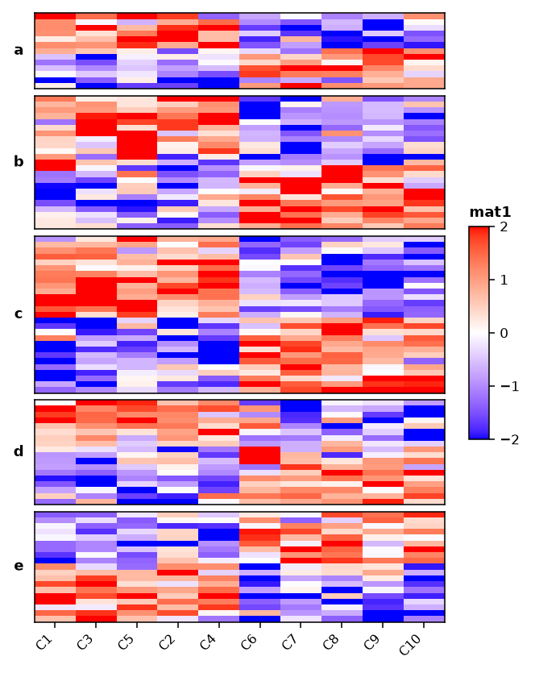
Next, we turn this layout into circular heatmaps and explore every
feature of circos.heatmap().
6.1 Input data#
circos.heatmap() accepts a 2D NumPy array, a
pandas.DataFrame, or a 1D vector/Series (which is
automatically reshaped into a single-column matrix). To split rows into
separate circular sectors, pass a categorical variable via
split (a list/array of strings, or a
pd.Categorical / categorical pd.Series;
numeric values are converted to strings internally).
Colors must be supplied explicitly via col:
- For continuous numeric data, pass a
ColorRamp2mapping produced bycolor_ramp2(). - For categorical/character data, pass a
dict(orpd.Series) mapping category names to colors.
In circular heatmaps, matrix rows run along the circular axis and matrix columns run radially:
col_fun1 = color_ramp2([-2.0, 0.0, 2.0], ["blue", "white", "red"])
circos.heatmap(df1, split=split, col=col_fun1)
circos.clear()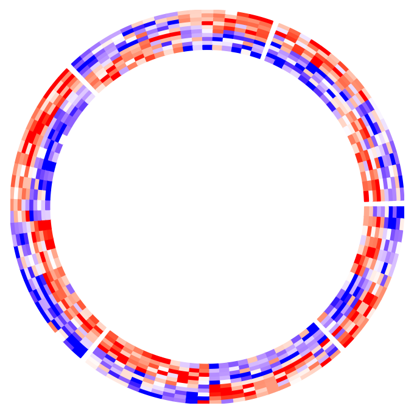
Important: Always call
circos.clear()after finishing a circular heatmap so cached clustering, splitting, and sector metadata are completely reset before the next plot.
When split is omitted, the entire matrix is drawn as a
single sector:
circos.heatmap(df1, col=col_fun1)
circos.clear()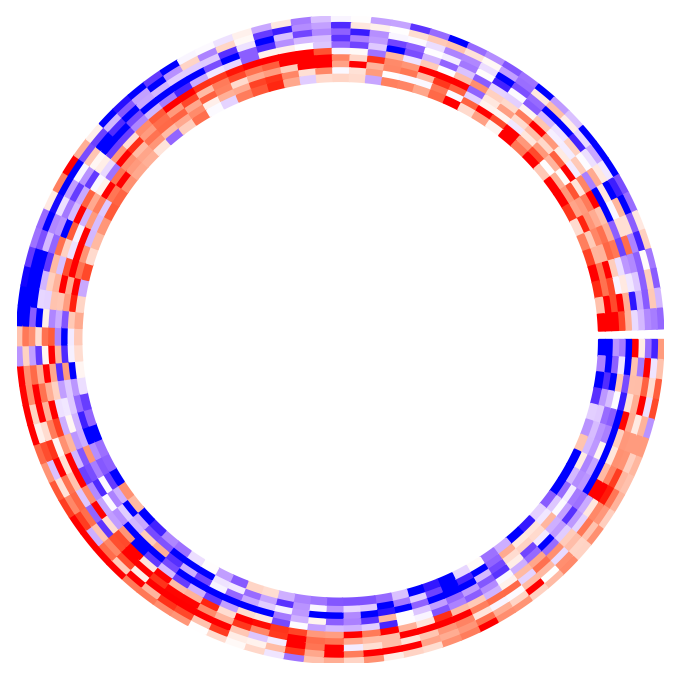
6.2 Circular layout#
Global layout parameters are controlled via circos.par()
prior to calling circos.heatmap(), while track height,
borders, and sector labels are passed directly to
circos.heatmap(). In the plot below,
start_degree=90 begins sector "a" at
θ = 90° and progresses clockwise through
"e":
circos.par(start_degree=90, gap_degree=10, points_overflow_warning=False)
circos.heatmap(
df1,
split=split,
col=col_fun1,
track_height=0.4,
bg_border="green",
bg_lwd=2.0,
bg_lty=2,
show_sector_labels=True,
)
circos.clear()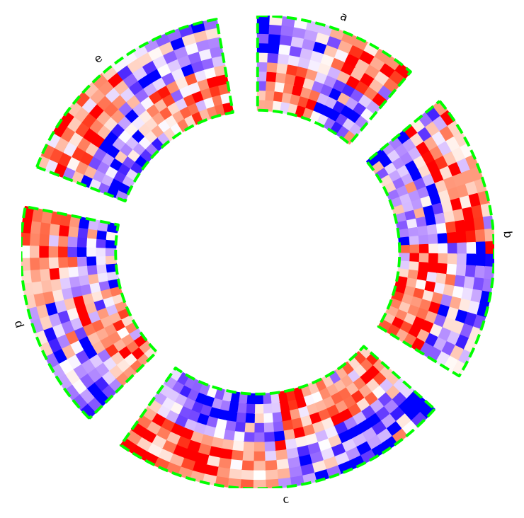
When split is a pd.Categorical, its
categories order determines the clockwise order of sectors;
when split is a plain list or array, sectors appear in
order of first occurrence (dict.fromkeys). Reversing the
category list flips the sector arrangement:
# Because circos.clear() reset start_degree to 0, sector "e" begins at θ = 0°
split_rev = pd.Categorical(
split.astype(str),
categories=["e", "d", "c", "b", "a"],
ordered=True,
)
circos.heatmap(df1, split=split_rev, col=col_fun1, show_sector_labels=True)
circos.clear()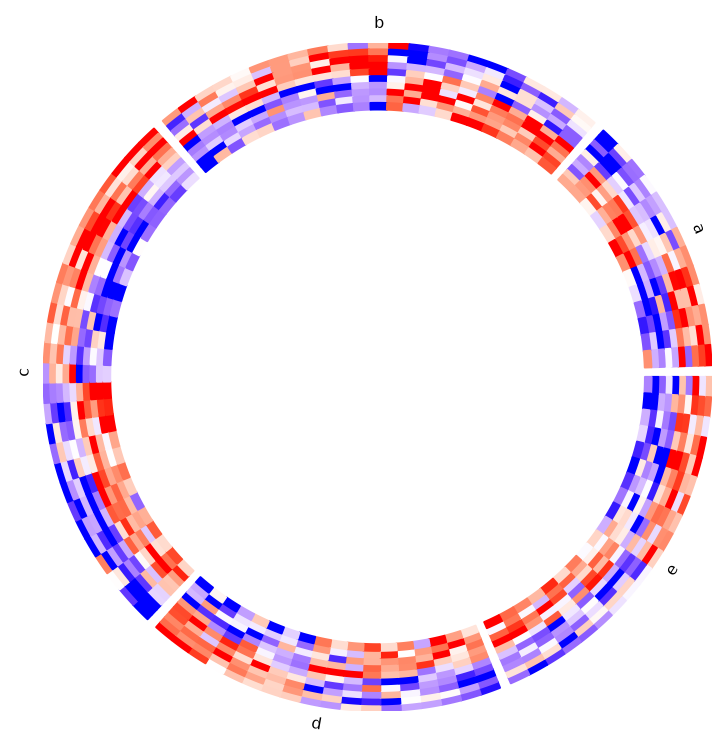
6.3 Dendrograms and row names#
By default, numeric matrices are clustered on rows. Set
dend_side to "inside" or
"outside" to draw the row dendrograms in an adjacent track
(whose radial thickness is set by dend_track_height):
circos.heatmap(df1, split=split, col=col_fun1, dend_side="inside")
circos.clear()
circos.heatmap(df1, split=split, col=col_fun1, dend_side="outside")
circos.clear()
When the input DataFrame has non-default row names
(index), set rownames_side to
"inside" or "outside" to display row labels in
their own track:
circos.heatmap(df1, split=split, col=col_fun1, rownames_side="inside")
circos.clear()
circos.heatmap(df1, split=split, col=col_fun1, rownames_side="outside")
circos.clear()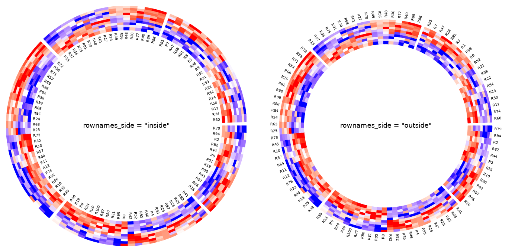
Both dendrograms and row names can be enabled together as long as they sit on opposite sides of the heatmap track:
circos.heatmap(df1, split=split, col=col_fun1, dend_side="inside", rownames_side="outside")
circos.clear()
circos.heatmap(df1, split=split, col=col_fun1, dend_side="outside", rownames_side="inside")
circos.clear()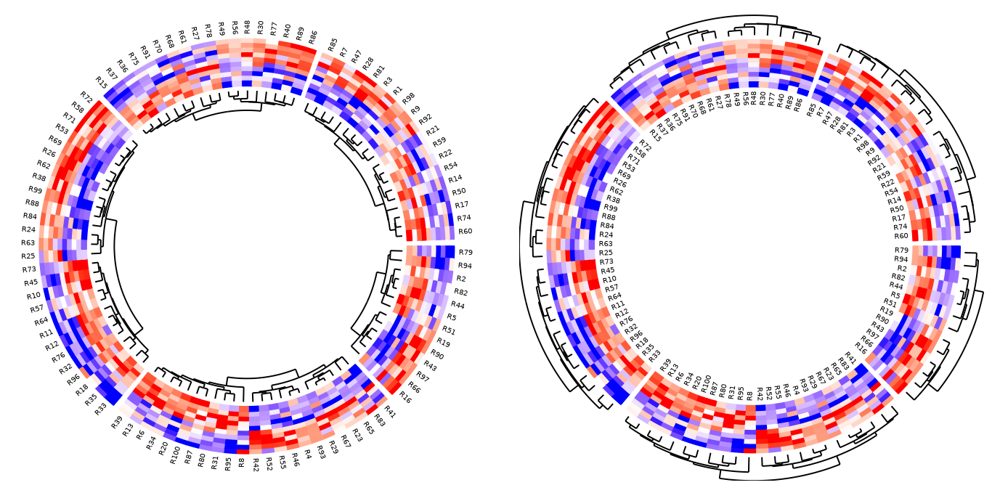
Row-label graphic parameters (rownames_col,
rownames_cex, rownames_font) accept either a
scalar or a sequence matching the total number of rows in the
matrix:
nr = len(df1)
circos.heatmap(
df1,
split=split,
col=col_fun1,
rownames_side="outside",
rownames_col=[(i % 10) + 1 for i in range(1, nr + 1)],
rownames_cex=rng.uniform(0.3, 2.0, size=nr),
rownames_font=[(i % 4) + 1 for i in range(1, nr + 1)],
)
circos.clear()
6.4 Clustering#
Setting cluster=False disables row clustering (no
dendrogram is drawn even if dend_side is specified),
keeping rows in their original order:
circos.heatmap(df1, split=split, col=col_fun1, cluster=True)
circos.clear()
circos.heatmap(df1, split=split, col=col_fun1, cluster=False)
circos.clear()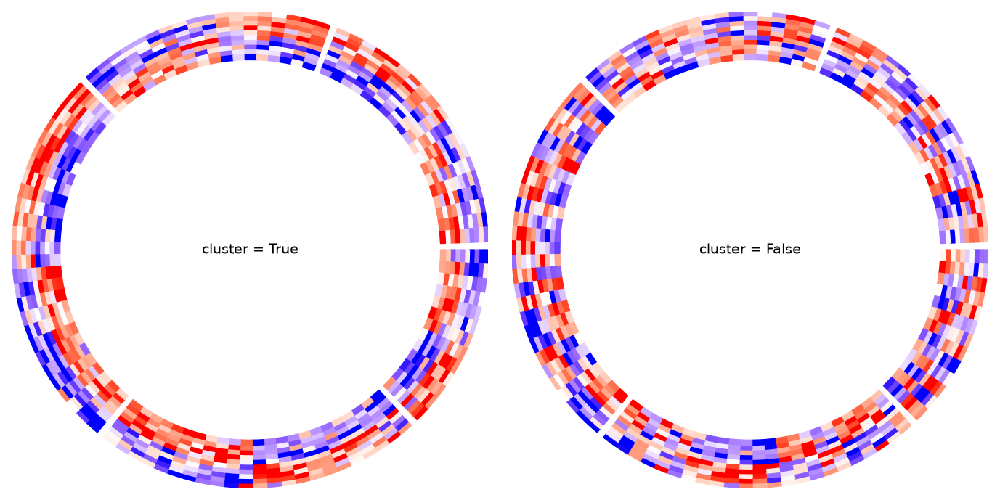
You can customize the linkage algorithm and distance metric with
clustering_method (e.g., "complete",
"average", "ward", "single") and
distance_method (e.g., "euclidean",
"manhattan", "maximum"). Note that
circos.heatmap() clusters rows only; to cluster columns as
well, reorder columns beforehand using hclust_from_data()
and as_dendrogram():
from circlize import as_dendrogram, hclust_from_data
col_od = as_dendrogram(hclust_from_data(df1.to_numpy().T)).leaf_indices()
circos.heatmap(df1.iloc[:, col_od], split=split, col=col_fun1)
circos.clear()6.5 Callback on dendrograms#
After each sector’s dendrogram is computed,
circos.heatmap() passes it through
dend_callback(dend, m, si):
dend: theDendrogramNodetree for the current sector.m: the sector’s NumPy sub-matrix.si: the sector name (str).
By default, circlize-py reorders branches by row
means via reorder_dendrogram(dend, np.nanmean(m, axis=1)).
You can substitute any custom DendrogramNode
transformer—for instance, a recursive minimum-height node sorter
(analogous to dendsort) that places tighter subtrees on the
left:
from circlize import DendrogramNode
def dendsort_node(dend: DendrogramNode) -> DendrogramNode:
root = dend.copy()
def _sort(node: DendrogramNode) -> float:
if node.leaf:
return 0.0
scored = [(_sort(c), c) for c in node.children]
scored.sort(key=lambda pair: pair[0])
node.children = [p[1] for p in scored]
return float(node.height) if all(c.leaf for c in node.children) else min(s for s, _ in scored)
_sort(root)
root._recompute_stats()
return root
circos.heatmap(
df1,
split=split,
col=col_fun1,
dend_side="inside",
dend_callback=lambda dend, m, si: dendsort_node(dend),
)
circos.clear()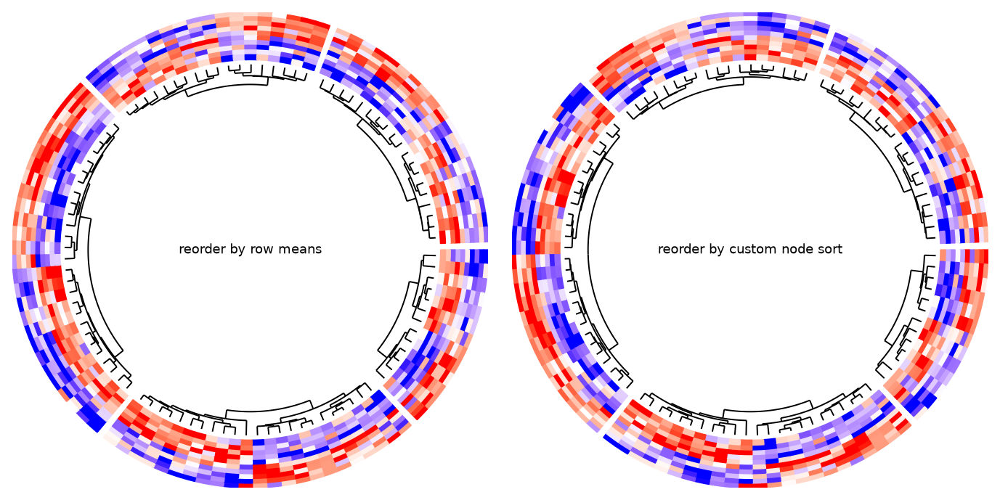
Inside dend_callback, color_branches()
paints dendrogram branches. Passing k=1 assigns one color
per sector, whereas k=4 on an unsplit heatmap highlights
four subtrees:
from circlize import color_branches
dend_col = {s: idx for idx, s in enumerate("abcde", start=1)}
circos.heatmap(
df1,
split=split,
col=col_fun1,
dend_side="inside",
dend_track_height=0.2,
dend_callback=lambda dend, m, si: color_branches(dend, k=1, col=[dend_col[si]]),
)
circos.clear()
circos.heatmap(
df1,
col=col_fun1,
dend_side="inside",
dend_track_height=0.2,
dend_callback=lambda dend, m, si: color_branches(dend, k=4, col=[2, 3, 4, 5]),
)
circos.clear()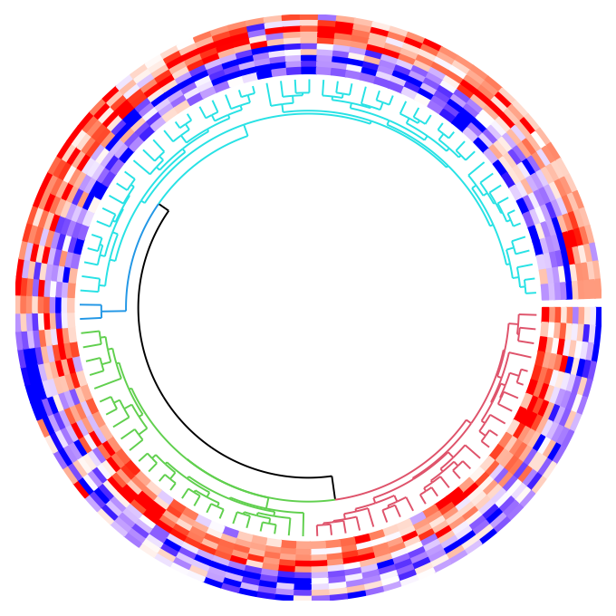
6.6 Multiple heatmap tracks#
The first call to circos.heatmap() initializes the
circular layout, splits the rows, and caches each sector’s clustering
and row order internally. Subsequent circos.heatmap() calls
automatically inherit that exact split and row ordering—which is why
calling circos.clear() before starting a new plot is
essential.
Here df2 is a row-permuted copy of df1.
When df1 is drawn first, df1 governs the
layout and dendrogram:
df2 = df1.iloc[rng.permutation(len(df1)), :].copy()
col_fun2 = color_ramp2([-2.0, 0.0, 2.0], ["green", "white", "red"])
circos.heatmap(df1, split=split, col=col_fun1, dend_side="outside")
circos.heatmap(df2, col=col_fun2)
circos.clear()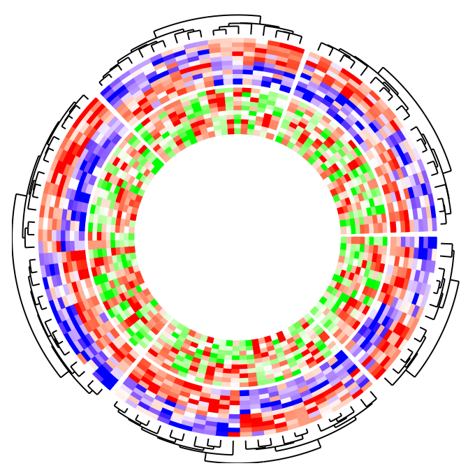
Swapping the call order transfers clustering control to
df2:
circos.heatmap(df2, split=split, col=col_fun2, dend_side="outside")
circos.heatmap(df1, col=col_fun1)
circos.clear()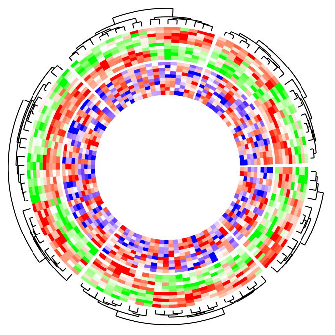
When an inner track (or a separate reference matrix) should define
the clustering instead of the outermost track, call
circos.heatmap.initialize() explicitly first:
circos.heatmap.initialize(df1, split=split)
circos.heatmap(df2, col=col_fun2, dend_side="outside")
circos.heatmap(df1, col=col_fun1)
circos.clear()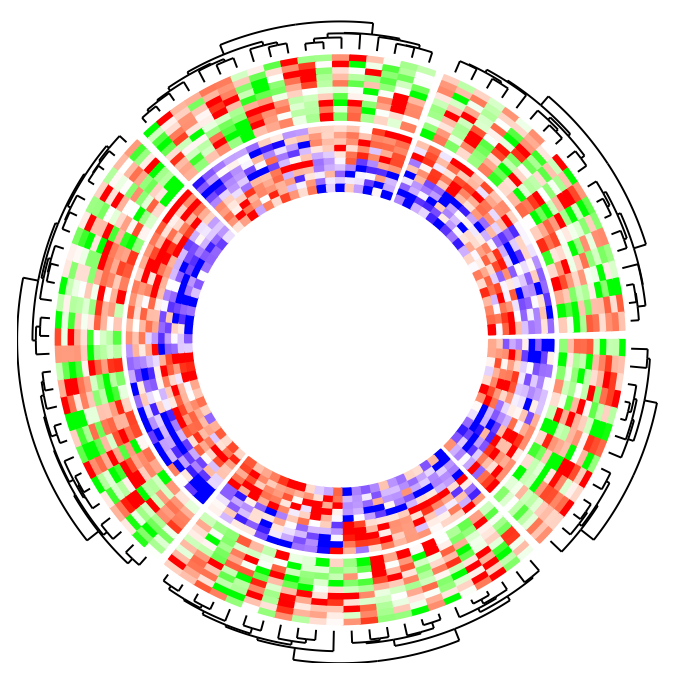
Similarly, you can cluster on the full df1 matrix while
plotting column subsets across multiple tracks:
circos.heatmap.initialize(df1, split=split)
circos.heatmap(df1.iloc[:, :5], col=col_fun1)
circos.heatmap(df1.iloc[:, 5:], col=col_fun1)
circos.clear()
6.7 With other tracks#
Because heatmap rows occupy
[0, 1], [1, 2], ..., [nr - 1, nr] along the circular axis
(centered at 0.5, 1.5, ..., nr - 0.5), custom
circos.track() panels can align points, lines, or boxplots
directly underneath any heatmap track. After
circos.heatmap() or
circos.heatmap.initialize(), CELL_META exposes
three 0-based sector metadata fields in
circlize-py:
CELL_META.row_dend(orCELL_META.dend): theDendrogramNodefor the current sector (Noneif unclustered).CELL_META.row_order(orCELL_META.order): 0-based row order of the sector’s sub-matrix after clustering (e.g.,[8, 11, 0, ...]).CELL_META.subset: sorted 0-based row indices from the original complete matrix belonging to the current sector (e.g.,[1, 4, 15, ...]).
In sector "a" of our running example, these metadata
values look like:
CELL_META.row_dend -> DendrogramNode(members=13, height=11.46435)
CELL_META.row_order -> [8, 11, 0, 9, 5, 1, 6, 3, 10, 4, 12, 7, 2]
CELL_META.subset -> [1, 4, 15, 18, 42, 43, 50, 65, 78, 81, 89, 93, 96]0-based indexing in circlize-py: Both
CELL_META.subsetandCELL_META.row_ordercontain 0-based Python indices, soarr[CELL_META.subset][CELL_META.row_order]aligns any NumPy array directly with the plotted heatmap rows, and x-positions fornrows sit atnp.arange(n) + 0.5.
Below we plot row means of the first five columns as red/blue points aligned under the heatmap:
from circlize import CELL_META
mat1_arr = df1.to_numpy()
row_mean = mat1_arr[:, :5].mean(axis=1)
circos.heatmap(df1, split=split, col=col_fun1)
def panel_points(x, y):
y_vals = row_mean[CELL_META.subset][CELL_META.row_order]
circos.lines(CELL_META.cell_xlim, [0.0, 0.0], lty=2, col="grey")
cols = np.where(y_vals > 0.0, "red", "blue")
circos.points(np.arange(len(y_vals)) + 0.5, y_vals, col=cols, pch=16, cex=0.5)
circos.track(
ylim=(float(row_mean.min()), float(row_mean.max())),
panel_fun=panel_points,
cell_padding=(0.02, 0.0, 0.02, 0.0),
)
circos.clear()
To place that scatter track outside the heatmap, call
circos.heatmap.initialize() first:
circos.heatmap.initialize(df1, split=split)
circos.track(
ylim=(float(row_mean.min()), float(row_mean.max())),
panel_fun=panel_points,
cell_padding=(0.02, 0.0, 0.02, 0.0),
)
circos.heatmap(df1, col=col_fun1)
circos.clear()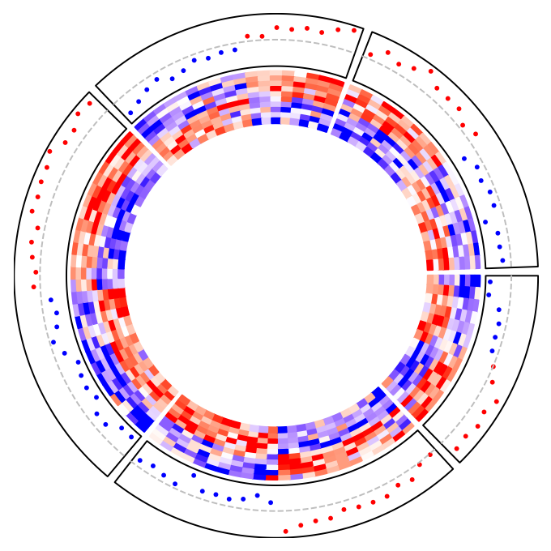
circos.boxplot() summarizes columns of a 2D array, so
transposing the reordered 5-column sub-matrix (m.T) draws
one boxplot per heatmap row at
pos=np.arange(n_rows) + 0.5:
circos.heatmap(df1, split=split, col=col_fun1)
def panel_boxplot(x, y):
m = mat1_arr[CELL_META.subset, :5][CELL_META.row_order, :]
n_rows = m.shape[0]
circos.boxplot(m.T, pos=np.arange(n_rows) + 0.5, pch=16, cex=0.3)
circos.lines(CELL_META.cell_xlim, [0.0, 0.0], lty=2, col="grey")
circos.track(
ylim=(float(mat1_arr.min()), float(mat1_arr.max())),
panel_fun=panel_boxplot,
cell_padding=(0.02, 0.0, 0.02, 0.0),
)
circos.clear()
6.8 Add annotations#
While show_sector_labels=True adds basic sector names,
passing track_index=get_current_track_index() to
circos.track() lets you decorate the heatmap track with
custom curved labels, column names, or column-group bars:
from circlize import convert_x, convert_y, get_current_track_index
circos.par(points_overflow_warning=False)
circos.heatmap(df1, split=split, col=col_fun1)
def panel_sector_lbl(x, y):
circos.text(
CELL_META.xcenter,
CELL_META.cell_ylim[1] + float(convert_y(2.0, "mm")),
f"this is group {CELL_META.sector_index}",
facing="bending.inside",
cex=0.8,
adj=(0.5, 0.0),
nice_facing=True,
)
circos.track(track_index=get_current_track_index(), panel_fun=panel_sector_lbl, bg_border=None)
circos.clear()
To add column names along the radial edge, widen the gap after the
last sector (gap_after=[2, 2, 2, 2, 10]) and annotate only
when CELL_META.sector_numeric_index == 5 (recall
sector_numeric_index is 1-based):
circos.par(gap_after=[2, 2, 2, 2, 10], points_overflow_warning=False)
circos.heatmap(df1, split=split, col=col_fun1, track_height=0.4)
def panel_colnames(x, y):
if CELL_META.sector_numeric_index == 5:
cn = list(df1.columns)
n_cn = len(cn)
circos.text(
np.repeat(CELL_META.cell_xlim[1], n_cn) + float(convert_x(1.0, "mm")),
np.arange(n_cn) + 0.5,
cn,
cex=0.55,
adj=(0.0, 0.5),
facing="inside",
)
circos.track(track_index=get_current_track_index(), panel_fun=panel_colnames, bg_border=None)
circos.clear()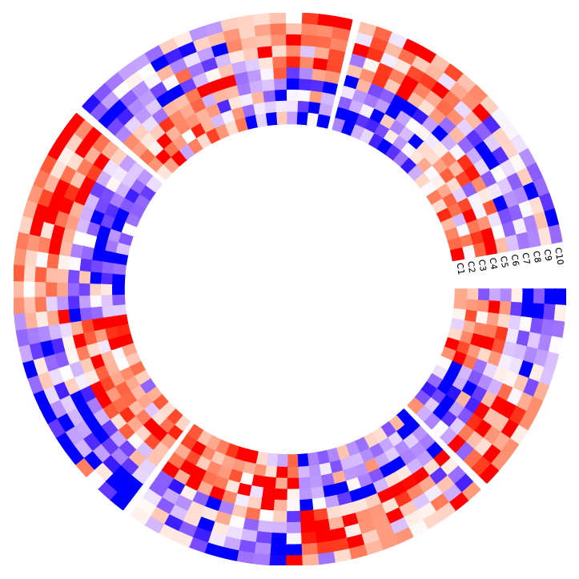
Using the same gap, circos.rect() and
circos.text() can mark groups of columns:
circos.par(gap_after=[2, 2, 2, 2, 10], points_overflow_warning=False)
circos.heatmap(df1, split=split, col=col_fun1, track_height=0.4)
def panel_colgroup(x, y):
if CELL_META.sector_numeric_index == 5:
x1 = float(CELL_META.cell_xlim[1] + convert_x(1.0, "mm"))
x2 = float(CELL_META.cell_xlim[1] + convert_x(5.0, "mm"))
xm = float(CELL_META.cell_xlim[1] + convert_x(3.0, "mm"))
circos.rect(x1, 0.0, x2, 5.0, col="orange", border=None)
circos.text(xm, 2.5, "group 1", cex=0.55, facing="clockwise")
circos.rect(x1, 5.0, x2, 10.0, col="pink", border=None)
circos.text(xm, 7.5, "group 2", cex=0.55, facing="clockwise")
circos.track(track_index=get_current_track_index(), panel_fun=panel_colgroup, bg_border=None)
circos.clear()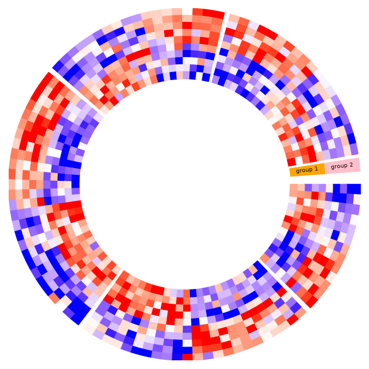
As explained in the Legends chapter, pair
the circular axes with a Matplotlib colorbar via
GridSpec:
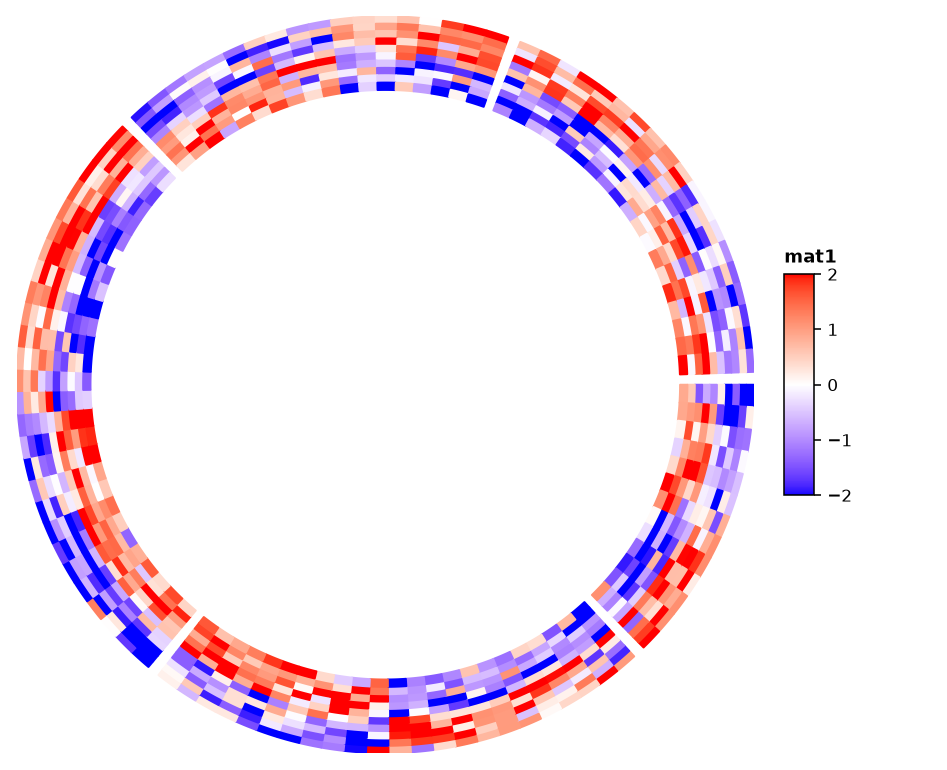
6.9 A complex example of circular heatmaps#
We now convert a multi-omics linear heatmap layout into a multi-track
circular visualization with inter-region links and a full set of eight
legends. The simulated dataset models 1,000 differentially methylated
regions (DMRs) across 20 samples (10 Tumor +
10 Control) alongside their nearest associated genes:
mat_meth:1000 × 20mean methylation levels (0to1).direction:"hyper"or"hypo"methylation change in Tumor vs Control.mat_expr:1000 × 20row-standardized (z-scored) gene expression negatively correlated with methylation.cor_pvalue:-log10(p-value)for the Pearson correlation between methylation and expression.gene_type:"protein_coding","lincRNA","microRNA","psedo-gene", or"others".anno_gene: gene model annotation ("intragenic","TSS", or"intergenic").dist: genomic distance from each DMR to its target gene TSS.anno_enhancer:1000 × 3enhancer overlap fractions (0to1).
Rows are partitioned into five clusters
(cluster1–cluster5) by k-means
(scipy.cluster.vq.kmeans2) on mat_meth:
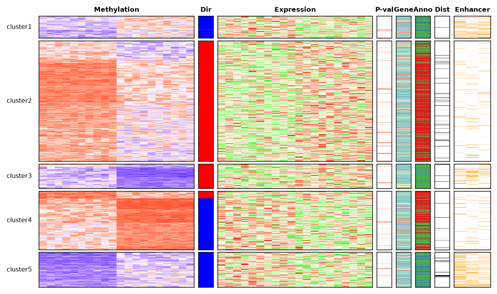
Using circos.heatmap(), all eight data tracks stack from
outside (mat_meth) to inside (anno_enhancer),
sharing the clustering and sector split defined by
mat_meth:
from circlize import color_ramp2, rand_color
col_meth = color_ramp2([0.0, 0.5, 1.0], ["blue", "white", "red"])
col_direction = {"hyper": "red", "hypo": "blue"}
col_expr = color_ramp2([-2.0, 0.0, 2.0], ["green", "white", "red"])
col_pvalue = color_ramp2([0.0, 2.0, 4.0], ["white", "white", "red"])
col_gene_type = dict(
zip(
["protein_coding", "lincRNA", "microRNA", "psedo-gene", "others"],
["#8DD3C7", "#FFFFB3", "#BEBADA", "#FB8072", "#80B1D3"],
)
)
col_anno_gene = dict(zip(["intragenic", "TSS", "intergenic"], ["#E41A1C", "#377EB8", "#4DAF4A"]))
col_dist = color_ramp2([0.0, 10000.0], ["black", "white"])
col_enhancer = color_ramp2([0.0, 1.0], ["white", "orange"])
circos.heatmap(mat_meth, split=km, col=col_meth, track_height=0.12)
circos.heatmap(direction, col=col_direction, track_height=0.01)
circos.heatmap(mat_expr, col=col_expr, track_height=0.12)
circos.heatmap(cor_pvalue, col=col_pvalue, track_height=0.01)
circos.heatmap(gene_type, col=col_gene_type, track_height=0.01)
circos.heatmap(anno_gene, col=col_anno_gene, track_height=0.01)
circos.heatmap(dist, col=col_dist, track_height=0.01)
circos.heatmap(anno_enhancer, col=col_enhancer, track_height=0.03)
circos.clear()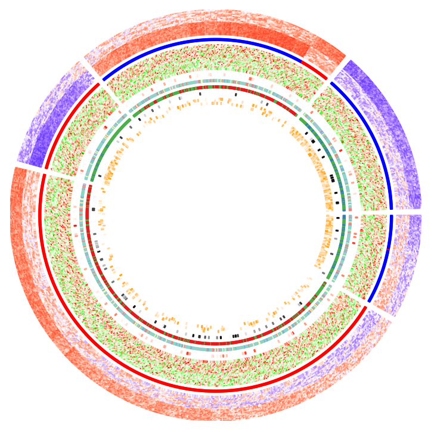
Suppose we have 20 pairwise 3D chromatin interactions between DMRs
stored in df_link with 0-based row indices
from_index and to_index. Manually resolving
each DMR’s circular position requires finding its sector
(km[idx]), fetching that sector’s subset and
row_order metadata, locating the row’s 0-based position in
[sub[i] for i in row_order], and adding
0.5:
from circlize import get_cell_meta_data
for from_idx, to_idx in zip(df_link["from_index"], df_link["to_index"]):
g1 = str(km[from_idx])
g2 = str(km[to_idx])
sub1 = get_cell_meta_data("subset", sector_index=g1)
ord1 = get_cell_meta_data("row_order", sector_index=g1)
x1 = [sub1[k] for k in ord1].index(from_idx) + 0.5
sub2 = get_cell_meta_data("subset", sector_index=g2)
ord2 = get_cell_meta_data("row_order", sector_index=g2)
x2 = [sub2[k] for k in ord2].index(to_idx) + 0.5
circos.link(g1, x1, g2, x2, col=rand_color(1)[0])circos.heatmap.link() encapsulates that exact lookup and
accepts either 0-based integer row indices or row-name
strings (when the first matrix passed to circos.heatmap()
is a DataFrame with string index labels):
for from_idx, to_idx in zip(df_link["from_index"], df_link["to_index"]):
circos.heatmap.link(int(from_idx), int(to_idx), col=rand_color(1)[0])
# Or link directly by DataFrame row names:
circos.heatmap.link("DMR10", "DMR420", col="#D95F02", lwd=1.6)
Finally, wrap the circular plot in a helper and place it on the left
of a 1 × 2 GridSpec, arranging all eight
continuous colorbars (with custom tick labels such as
"0.0001" for p-value and
"0kb"–"10kb" for TSS distance) and discrete
patch legends into two neat columns on the right: